ADVS <- import(file = "./data/advs.xpt")
PR <- ADVS %>%
filter(PARAMN == 3) %>%
filter(VISITNUM > 3) %>%
mutate(StudyWeek = floor(ADY/7))4 Mini-project 5 - Getting started with {ggplot2}
4.1 Data Source
For these projects we are using anonymized CDISC datasets, which can be found here: https://github.com/phuse-org/phuse-scripts/tree/master/data/adam/cdisc
In this mini-project we will be using the {ggplot2} package to create data visualizations. {ggplot2} is our preferred package for creating data visualizations as there are a large number of ancillary packages that can be used to annotate and manipulate the created plots.
In this mini-project we’ll be using the ggplot function and defining how data columns map to plot aesthetics using the aes function. We’re also going to be using various functions that define how the data points are going to be displayed in the plot - geom_point, geom_line. The labs function allows you to annotate plots with titles, subtitles, axes labels etc.
4.2 1. Create a dataset
This dataset is the Analysis Vital Signs from CDISC that was created for training/testing purposes. We’re going to focus on the heart rate measurement in this Mini Project. We are calculating a new variable StudyWeek that defines the week within the Active Treatment Period.
4.3 2. Use basic ggplot function
The basic ggplot command from the {ggplot2} package creates a blank “canvas” on which to place points, lines, shapes etc.
The data argument is the dataset used for the plot. mapping identifies which columns in the data are used to define aesthetics on the plot, which are passed to the aes( ) function. So in this case the x axis is defined by ADY which is the study day of the measurement. The y-axis is the numeric value for the heart rate given in the column AVAL. Note this this statement alone simply defines the attributes of the plot - dataset and column mapping to plot attributes.
While learning {ggplot2} we strongly recommend explicitly using the mapping argument. This will remind you that you are mapping between column values and attributes on the plot. You will see many people skip naming this argument, but this can lead to confusion and makes it harder to learn what is going on in the {ggplot2} call.
ggplot(data = PR, mapping = aes(x=ADY, y=AVAL)) 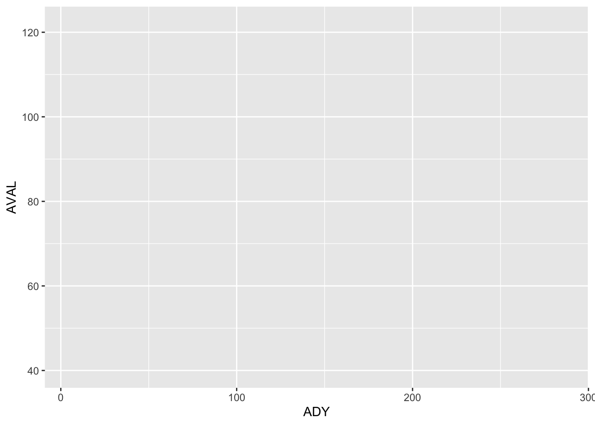
4.4 3. Add points to the “canvas” created in the previous step.
To make a scatterplot add ‘+ geom_point()’ to the above statement. NOTE: always put the + sign at the end of a line, not at the start.
NOTE: The {ggplot2} package was created before the advent of the %>% operator. You can view the + operator within {ggplot2} as being analogous to the %>% pipe. + is adding additional layers to the plot. If you are familiar with image editing software like Adobe Photoshop then you’ll know that images within Photoshop can be made up of layers which are edited individually.
By default, the geom_ functions will honour the column to aesthetic attributes defined in the ggplot function but it doesn’t have to. These geom_ functions have a mapping argument of their own to allow you to redefine or change mappings if required.
ggplot(data = PR, mapping = aes(x=ADY, y=AVAL)) +
geom_point()Warning: Removed 3 rows containing missing values or values outside the scale range
(`geom_point()`).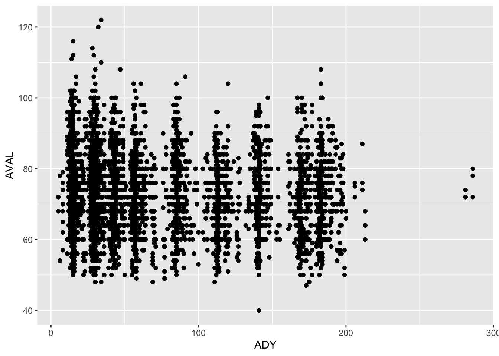
4.5 4. Identify groups of data
There is a group argument to the aes( ) function which allows you to define groupings / data series within the dataset. In the plot above, it might be good to show which data corresponds to different treatment arms.
ggplot(data = PR, mapping = aes(x=ADY, y=AVAL, group = TRTA)) +
geom_point()Warning: Removed 3 rows containing missing values or values outside the scale range
(`geom_point()`).Huh? That hasn’t done anything?
Well, yes it has. It’s just that you can’t see the change in the graph. You’ve defined the grouping in the data that goes into the graph. But did you want to see different colours or different shapes? If so, then you need to map these to colour or shape attributes in the aes( ) function.
ggplot(data = PR, mapping = aes(x=ADY, y=AVAL, group = TRTA,
colour = TRTA, shape = TRTA)) +
geom_point()Warning: Removed 3 rows containing missing values or values outside the scale range
(`geom_point()`).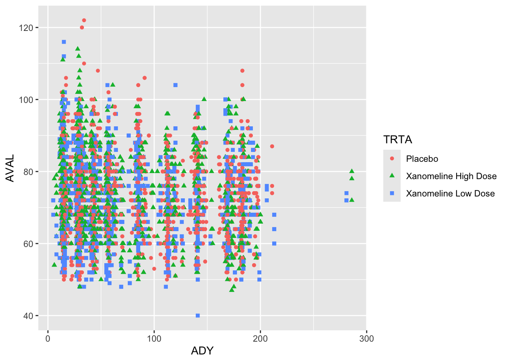
Mapping group attributes to column values in the ggplot function i.e. changing attributes for every level of a group variable means that subsequent geom_ settings are applied to each level of the group variable.
4.6 5. Identify the data series from each subject to create a “Spaghetti plot”
This plot shows that while most subjects have ECG measurements on the same day, there are a few subjects that have ECGs at different times. What the plot does not show is how the points are grouped by individual i.e. each individual is measured multiple times, so how do we show which points are from the same subject?
Before running the chunk below, have a guess what the plot will look like.
ggplot(data = PR, mapping = aes(x=ADY, y=AVAL)) +
geom_line()
In Step 4 above, we defined a group mapping to show data for each level of TRTA. We can use exactly the same technique here to show the data for each subject. Add a group attribute within the aes function below to show the “spaghetti plot” that shows the heart rate data series for each subject. Hint: patients are identified using the USUBJID variable. Typically, spaghetti plots use one colour for the lines linking observations from the same subject so there is no need to specify a colour attribute here.
plot1 <- PR %>%
ggplot(data = PR, mapping = aes(x=ADY, y=AVAL, group = )) +
geom_line()
plot1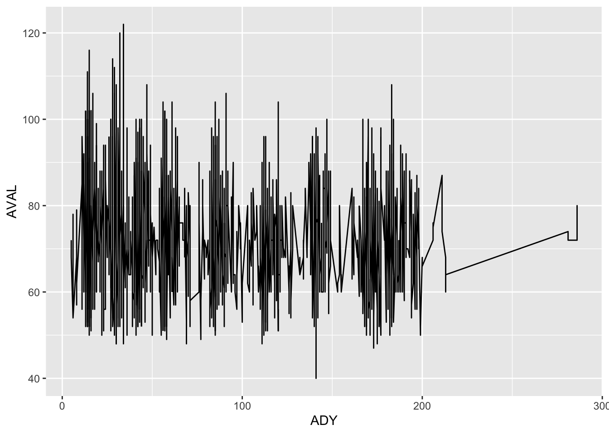
Note that we’re assigning the {ggplot2} plot to an object called plot1. This is a good idea, since it means we can pick up that object at any point and make modifications to it simply by using the + operator and making changes. ggplot2 plot objects can have any attribute changed or added to using the + operator.
4.7 6. Add labels (titles, axes labels) and choose a theme for the plot
Change the text in the labs() statement below to make sensible titles and axes labels for the plot.
plot2 <- plot1 +
labs(title = "Plot Title",
subtitle = "Plot subtitle",
x = "X-axis label",
y = "Y-axis label",
caption = paste("Plot created on:",Sys.Date()))
plot2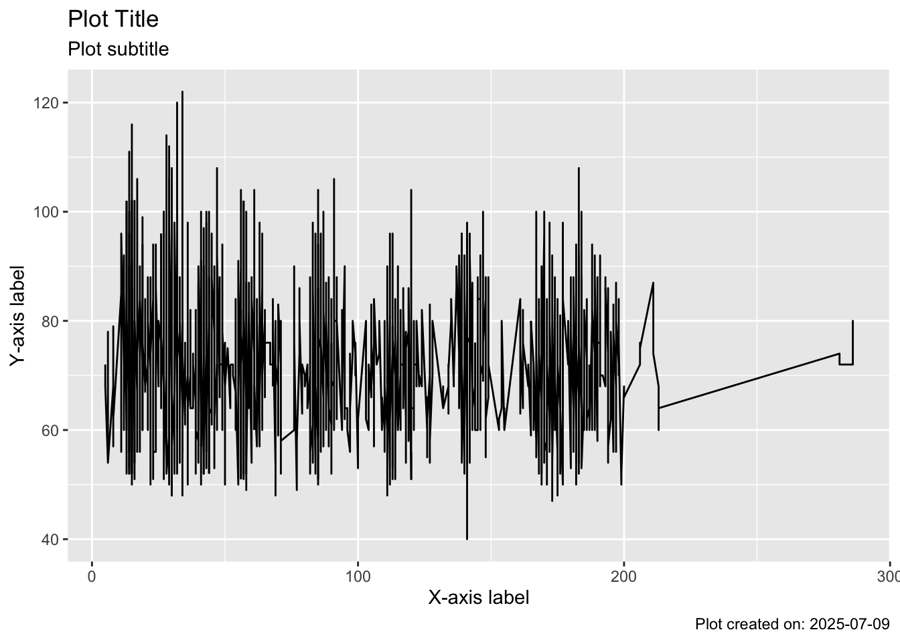
You can also choose a theme for the plot from a wide range of {ggplot2} themes. Other themes are available from a variety of {ggplot2} helper packages such as {cowplot}. Try out some different themes using theme_... functions to see which one you like best.
plot3 <- plot2 +
theme_bw()
plot3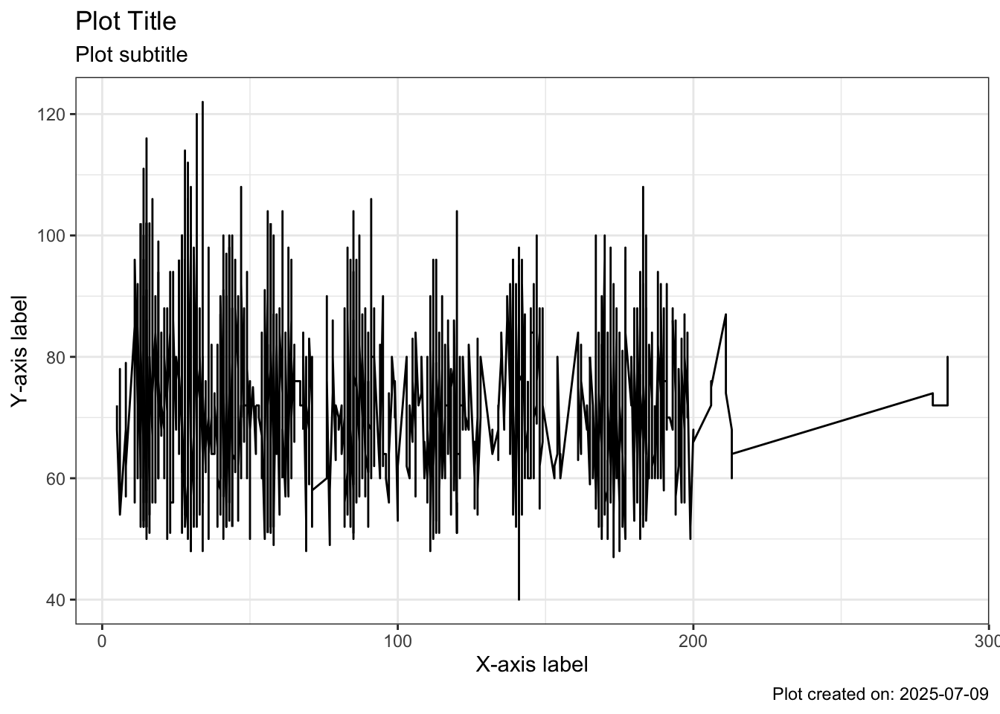
4.8 7. Split by treatment arm
The next thing we might want to do is to split the above plot (which shows ALL subjects in the trial) by treatment arm. To do this, we want to use a variable within the data to define which data goes in which panel. We do this using the facet_ functions. facet_grid splits the data by one or more specified variables and arranges the plots in a grid on the page - one variable defining the rows and (optionally) another variable specifying the columns. facet_wrap takes one variable and creates a new plot for each distinct value of that variable and fills the page with as many plots as it can. Try out both here to see which one works best in this situation:
plot4 <- plot3 +
facet_wrap(facets = "TRTA")
plot4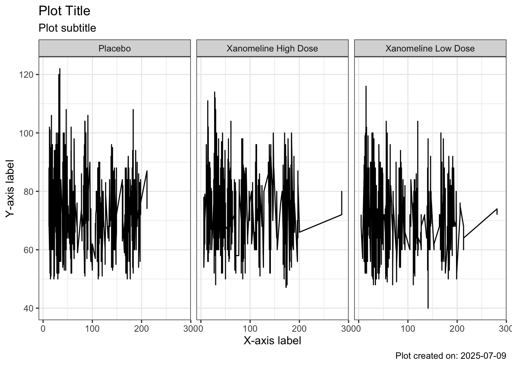
Now that you know how, you can employ ANY variable to split the plot e.g. SEX, PERIOD, …
4.9 8. Save the plot
Once you’re ready to save the plot, you can use the ggsave function to render and externalise the plot in whatever format you need. It’s a good idea to also save the final plot object using saveRDS as you can then read this object into R and make changes later.
NOTE: If you are saving from this .rmd file then the plots and output object will be saved wherever this .rmd file is located.
plot4 ggsave(filename = "myPlot.png", device = "png", width = 192, height = 108, units = "mm")
saveRDS(object = plot4, file = "savedPlot.rds")4.10 9. Add a summary statistic e.g. median
The spaghetti plot may be useful, but it would be good to show the median heart rate so we can get a feel for how this changes for each treatment arm.
We can do this using the built in {ggplot2} functions stat_summary.
plot3 +
stat_summary(geom = "point", fun = median, color = "red")Warning: Removed 3 rows containing non-finite outside the scale range
(`stat_summary()`).In the plot3 object, we have a grouping attribute in the ggplot function call mapped to USUBJID from the dataset. By specifying this group aesthetic we are telling R that any geom_ and stat_ functions should use the same grouping. So that means that the stat_summary is attempting to display the median values at each time point for every subject. Which is probably NOT what we actually want, since there is only one observation per subject per time point.
So how do we go back to one showing medians calculate across ALL subjects?
plot3 +
stat_summary(mapping = aes(group = NULL), fn = median, colour = "red")Warning in stat_summary(mapping = aes(group = NULL), fn = median, colour =
"red"): Ignoring unknown parameters: `fn`Warning: Removed 3 rows containing non-finite outside the scale range
(`stat_summary()`).No summary function supplied, defaulting to `mean_se()`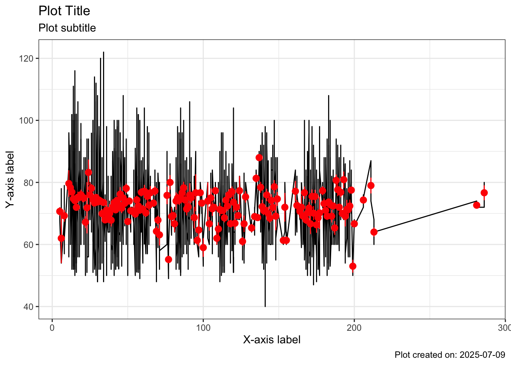
Not all subjects have been assessed for vital signs on the same day of the treatment period. Let’s look at the same plot as above, but using the calculated variable StudyWeek.
ggplot(data = PR, mapping = aes(x=StudyWeek, y=AVAL)) +
geom_point()Warning: Removed 3 rows containing missing values or values outside the scale range
(`geom_point()`).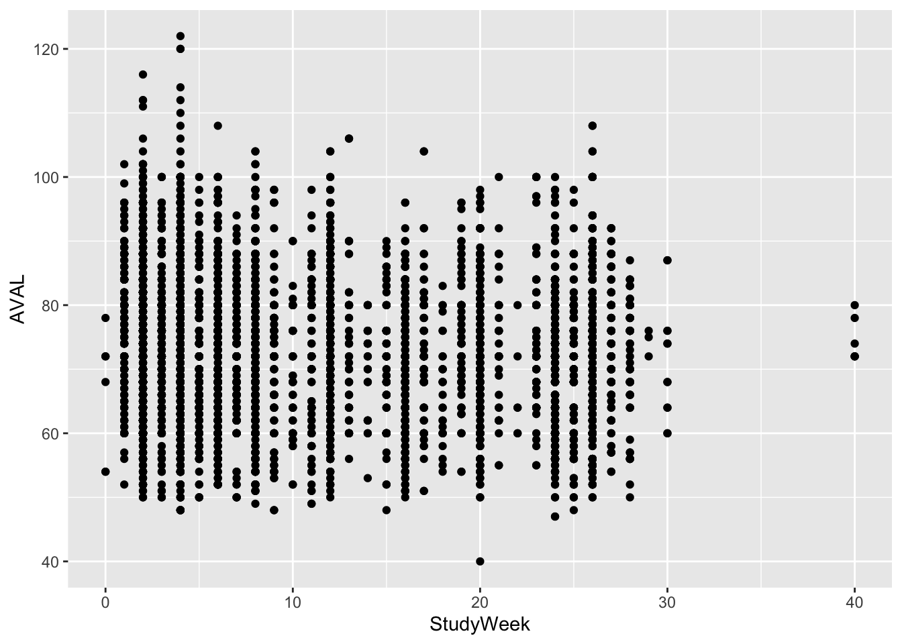
We can see that subjects have measurements on weeks between 0-30, and then a few individuals having measurements at week 40. Let’s filter down to the weeks 0, 5, 10, 15, 20, 25, 30 before applying the stat_summary function:
dataWeeks <- PR %>%
filter(StudyWeek %in% c(0, 5, 10, 15, 20, 25, 30)) %>%
mutate(ADY = StudyWeek * 7)
dataWeeks %>%
ggplot(mapping = aes(x = StudyWeek, y = AVAL)) +
stat_summary(mapping = aes(group = NULL),
fun = median,
colour = "red")Warning: Removed 1 row containing non-finite outside the scale range
(`stat_summary()`).Warning: Removed 7 rows containing missing values or values outside the scale range
(`geom_segment()`).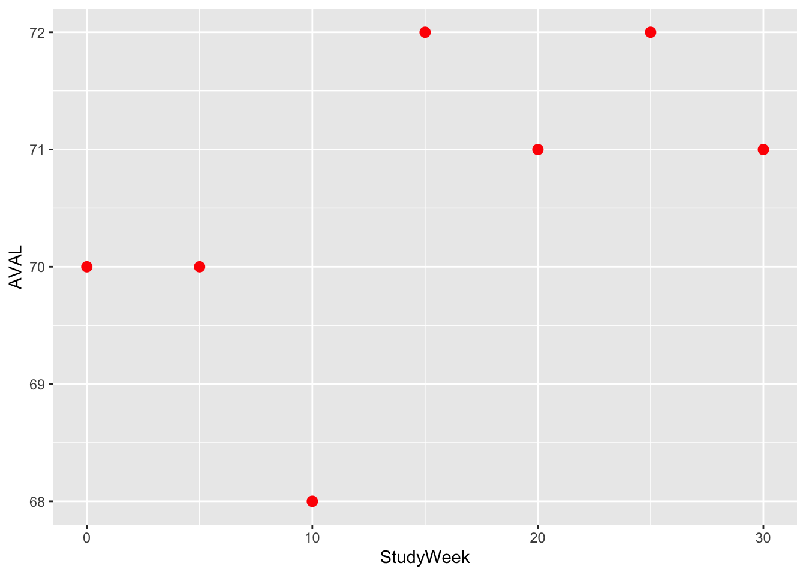
Now we might want to superimpose these medians onto the spaghetti plots above. But observe that the StudyWeek variable needs to be rescaled to show “days” so that it can be plotted on the same x-axis scale.
plot3 +
stat_summary(data = dataWeeks,
mapping = aes(x = ADY,
group = NULL),
fun = median,
colour = "red")Warning: Removed 1 row containing non-finite outside the scale range
(`stat_summary()`).Warning: Removed 7 rows containing missing values or values outside the scale range
(`geom_segment()`).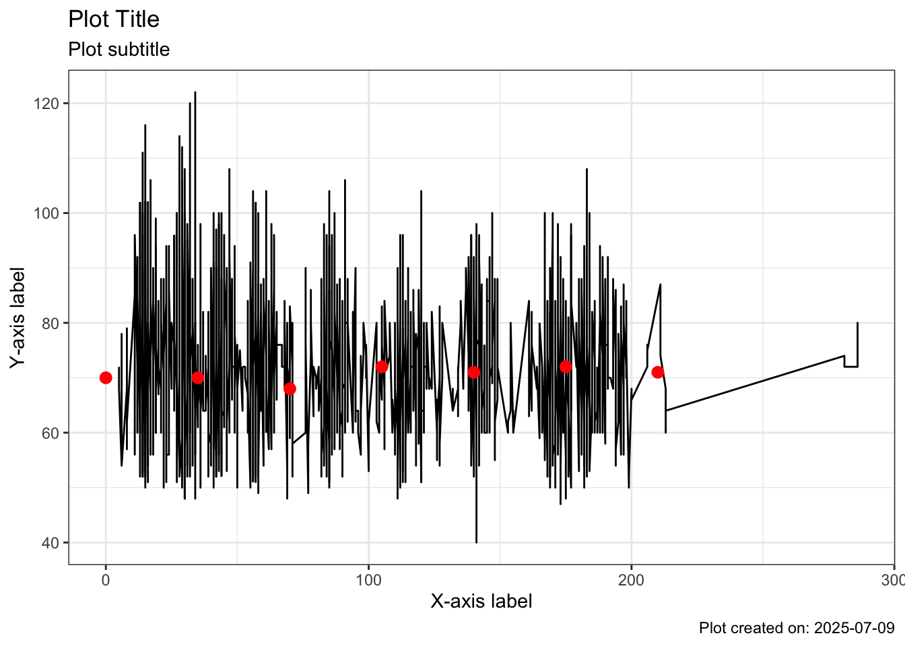
This plot illustrates how we can add a layer with new data (here, just the original data selecting the weeks we are interested in).
4.11 10. Axis bounds
Sometimes we want to limit the plot axes to “zoom in” on an area of the plot where most of the data are. If you specify scale_y_continuous(limits=c(50, 120)) then points outside the range 50 - 120 are removed. If you specify coord_cartesian(ylim=c(50, 120)) then you are effectively zooming in to a particular range. Any values outside that range will still exist and influence regression lines / smooths / medians, but are not shown. Typically we will want to “zoom in” rather than crop and eliminate observations outside of the range.
plot4 +
coord_cartesian(ylim=c(50, 120))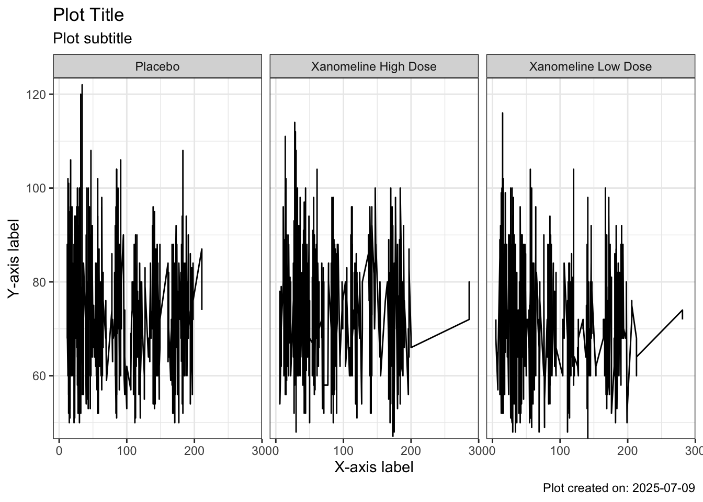
4.12 11. The ggplot2 object.
Let’s look at the plot4 object in more detail. You can examine it using the Environment tab in RStudio IDE. Click on the magnifying glass to the right of the object. plot4 is an R list with type ggplot. Within it you’ll see it elements such as the data, layers, scales, mapping, theme, coordinates, facet, labels. This means that at any time you can extract information from a ggplot object and use it.
To see the elements of a list in the RStudio IDE, go to the Environment tab and then click on the blue arrow to the left of the plot4 object. This will show a huge amount of information about the plot - these are the plot attributes, which are contained in an R list format. To access an element of a list, you can use the <objectName>$<listItemName> syntax. Let’s look at the mapping element of the plot4 object:
plot4$mappingAesthetic mapping:
* `x` -> `ADY`
* `y` -> `AVAL`From this information, you’ll see that the x and y attributes are being mapped to variable names ADY and PARAM. What we might want to do is to extract the variable names in these attributes and use them to determine labels for the plot.
In programming, we sometimes want to use a variable name to tell us which column contains values, and sometimes we just want to use the name of that variable. In this case, because we want to just use the name, we need to tell R to turn the variable “pointer” to a character string. We do this using the quo_name function. We’ll look more at how to refer to variables and use them in functions in a later Mini-Project.
In the code below we have created a function called uniqueVal. This function is going to be used to extract information from dataset variables that can be used in axes labels. Again, in a future Mini-Project we’ll look in more depth at creating your own functions. For now, just be aware that we’ve written a function to find the unique value of a given variable in the dataset. We have a little defensive programming that checks that the variable doesn’t contain more than one unique value.
By approaching the problem in this way, we avoid having to “hard code” axes labels and can more easily reuse code for different cases.
xLab <- quo_name(plot4$mapping$x)
yLab <- quo_name(plot4$mapping$y)
groupLab <- quo_name(plot4$mapping$group)
uniqueVal <- function(x){
if(length(unique(x))>1) simpleWarning(paste0("More than one value in column:",x))
unique(x)
}
study <- uniqueVal(plot4$data$STUDYID)
measure <- uniqueVal(plot4$data$PARAM)
xLab <- ifelse(xLab == "ADY", "Analysis Relative Day", xLab)
groupLab <- case_when(groupLab == "USUBJID" ~ "Subject",
groupLab == "TRTA" ~ "Treatment",
TRUE ~ groupLab)
plot4 +
labs(title = glue::glue("Study {study}"),
subtitle = glue::glue("Plot of {measure} by {groupLab}"),
x = xLab,
y = glue::glue("{measure}"))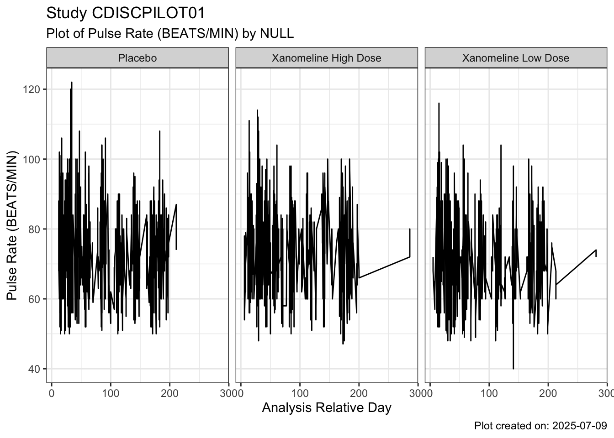
4.13 12. Changing data
Now for the clever bit. {ggplot2} allows you to change the dataset in a plot, and inheriting attributes from the previous plot. You do this using the %+% command. On the left of the %+% should be an object of type ggplot and on the right should be a dataset object.
And if you use the code above to “guess” the labels for the plot from information within the data, then the labels automagically update themselves. Ideally, you might want to make the label guessing code into a function that takes the plot object as an input, but we’ll come to functions shortly.
SysBP <- ADVS %>%
filter(PARAMN == 1) %>%
filter(VISITNUM > 3)
SysBP_plot <- plot4 %+%
SysBP
xLab <- quo_name(SysBP_plot$mapping$x)
yLab <- quo_name(SysBP_plot$mapping$y)
groupLab <- quo_name(SysBP_plot$mapping$group)
study <- uniqueVal(SysBP_plot$data$STUDYID)
measure <- uniqueVal(SysBP_plot$data$PARAM)
xLab <- ifelse(xLab == "ADY", "Analysis Relative Day", xLab)
groupLab <- case_when(groupLab == "USUBJID" ~ "Subject",
groupLab == "TRTA" ~ "Treatment",
TRUE ~ groupLab)
SysBP_plot +
labs(title = glue::glue("Study {study}"),
subtitle = glue::glue("Plot of {measure} by {groupLab}"),
x = xLab,
y = glue::glue("{measure}"))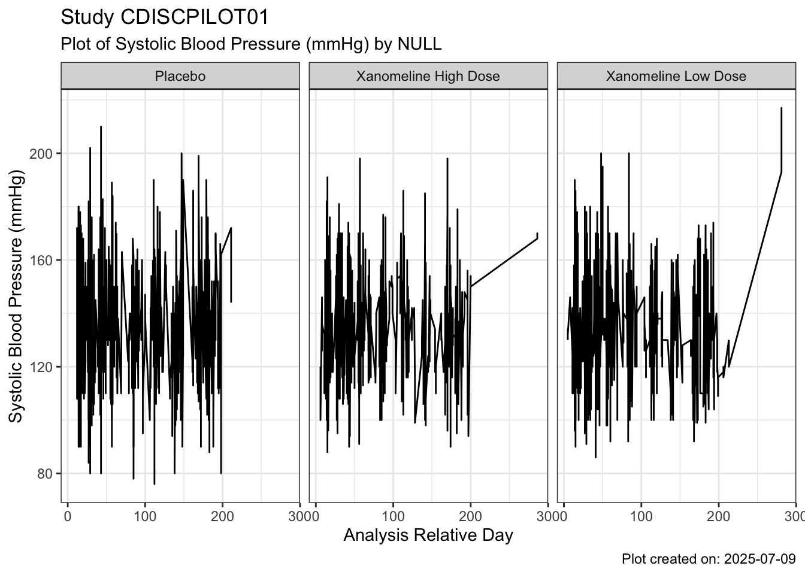
4.14 Challenge
Do the same for Diastolic BP and Temperature. Ensure that the axes labels match the type of data used.
Update plot4 for the new endpoint.
4.15 Extra challenge
Read in vital signs data from another study which uses the VS or ADVS dataset standards. What code needs to change when you produce Pulse Rate plot for the new dataset (compared to the Pulse Rate plot which uses data values to determine labels)?
sessioninfo::session_info()─ Session info ───────────────────────────────────────────────────────────────
setting value
version R version 4.3.3 (2024-02-29)
os macOS 26.0
system aarch64, darwin20.0.0
ui unknown
language (EN)
collate C.UTF-8
ctype C.UTF-8
tz Asia/Seoul
date 2025-07-09
pandoc 3.6.3 @ /Users/fkt/Downloads/repo/pharma-hands-on-exercises/.pixi/envs/default/bin/ (via rmarkdown)
quarto 1.7.32 @ /Users/fkt/Downloads/repo/pharma-hands-on-exercises/.pixi/envs/default/bin/quarto
─ Packages ───────────────────────────────────────────────────────────────────
package * version date (UTC) lib source
cli 3.6.5 2025-04-23 [1] CRAN (R 4.3.3)
digest 0.6.37 2024-08-19 [1] CRAN (R 4.3.3)
dplyr * 1.1.4 2023-11-17 [1] CRAN (R 4.3.3)
evaluate 1.0.4 2025-06-18 [1] CRAN (R 4.3.3)
farver 2.1.2 2024-05-13 [1] CRAN (R 4.3.3)
fastmap 1.2.0 2024-05-15 [1] CRAN (R 4.3.3)
forcats * 1.0.0 2023-01-29 [1] CRAN (R 4.3.3)
generics 0.1.4 2025-05-09 [1] CRAN (R 4.3.3)
ggplot2 * 3.5.2 2025-04-09 [1] CRAN (R 4.3.3)
glue * 1.8.0 2024-09-30 [1] CRAN (R 4.3.3)
gtable 0.3.6 2024-10-25 [1] CRAN (R 4.3.3)
haven 2.5.4 2023-11-30 [1] CRAN (R 4.3.3)
hms 1.1.3 2023-03-21 [1] CRAN (R 4.3.3)
htmltools 0.5.8.1 2024-04-04 [1] CRAN (R 4.3.3)
htmlwidgets 1.6.4 2023-12-06 [1] CRAN (R 4.3.3)
jsonlite 2.0.0 2025-03-27 [1] CRAN (R 4.3.3)
knitr 1.50 2025-03-16 [1] CRAN (R 4.3.3)
labeling 0.4.3 2023-08-29 [1] CRAN (R 4.3.3)
lifecycle 1.0.4 2023-11-07 [1] CRAN (R 4.3.3)
lubridate * 1.9.4 2024-12-08 [1] CRAN (R 4.3.3)
magrittr 2.0.3 2022-03-30 [1] CRAN (R 4.3.3)
pillar 1.11.0 2025-07-04 [1] CRAN (R 4.3.3)
pkgconfig 2.0.3 2019-09-22 [1] CRAN (R 4.3.3)
purrr * 1.0.4 2025-02-05 [1] CRAN (R 4.3.3)
R.methodsS3 1.8.2 2022-06-13 [1] CRAN (R 4.3.3)
R.oo 1.27.1 2025-05-02 [1] CRAN (R 4.3.3)
R.utils 2.13.0 2025-02-24 [1] CRAN (R 4.3.3)
R6 2.6.1 2025-02-15 [1] CRAN (R 4.3.3)
ragg 1.4.0 2025-04-10 [1] CRAN (R 4.3.3)
RColorBrewer 1.1-3 2022-04-03 [1] CRAN (R 4.3.3)
readr * 2.1.5 2024-01-10 [1] CRAN (R 4.3.3)
rio * 1.2.3 2024-09-25 [1] CRAN (R 4.3.3)
rlang 1.1.6 2025-04-11 [1] CRAN (R 4.3.3)
rmarkdown 2.29 2024-11-04 [1] CRAN (R 4.3.3)
scales 1.4.0 2025-04-24 [1] CRAN (R 4.3.3)
sessioninfo 1.2.3 2025-02-05 [1] CRAN (R 4.3.3)
stringi 1.8.4 2024-05-06 [1] CRAN (R 4.3.3)
stringr * 1.5.1 2023-11-14 [1] CRAN (R 4.3.3)
systemfonts 1.2.3 2025-04-30 [1] CRAN (R 4.3.3)
textshaping 0.4.0 2024-05-24 [1] CRAN (R 4.3.3)
tibble * 3.3.0 2025-06-08 [1] CRAN (R 4.3.3)
tidyr * 1.3.1 2024-01-24 [1] CRAN (R 4.3.3)
tidyselect 1.2.1 2024-03-11 [1] CRAN (R 4.3.3)
tidyverse * 2.0.0 2023-02-22 [1] CRAN (R 4.3.3)
timechange 0.3.0 2024-01-18 [1] CRAN (R 4.3.3)
tzdb 0.5.0 2025-03-15 [1] CRAN (R 4.3.3)
vctrs 0.6.5 2023-12-01 [1] CRAN (R 4.3.3)
withr 3.0.2 2024-10-28 [1] CRAN (R 4.3.3)
xfun 0.52 2025-04-02 [1] CRAN (R 4.3.3)
yaml 2.3.10 2024-07-26 [1] CRAN (R 4.3.3)
[1] /Users/fkt/Downloads/repo/pharma-hands-on-exercises/.pixi/envs/default/lib/R/library
* ── Packages attached to the search path.
──────────────────────────────────────────────────────────────────────────────